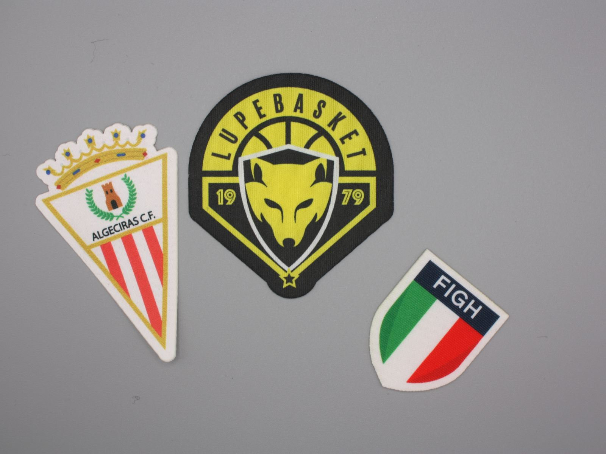
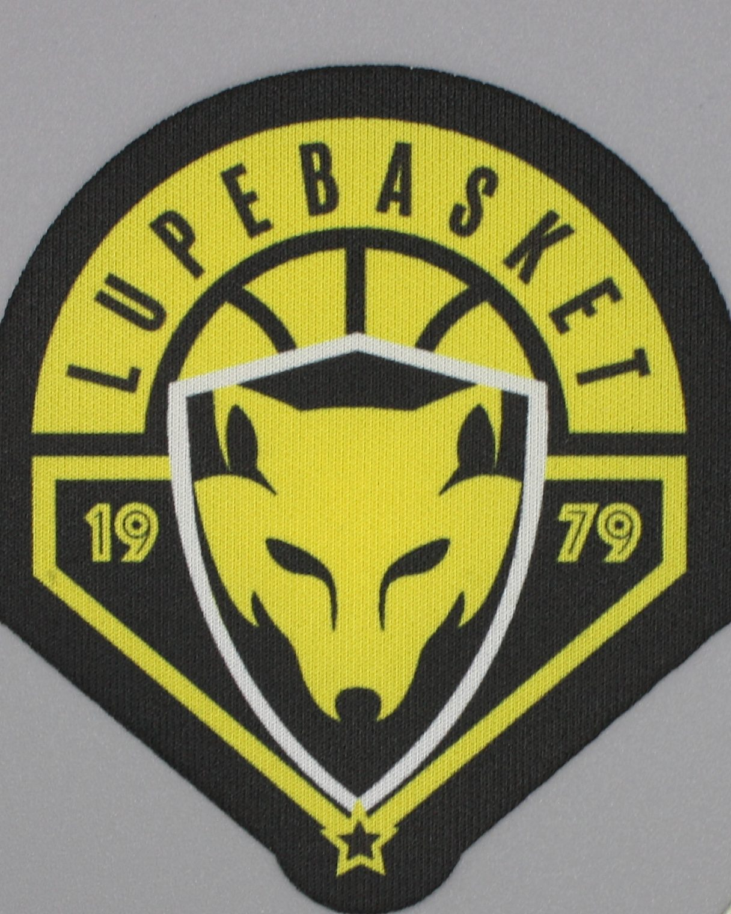

Custom Sublimated Patches
An accessible, fast solution for short runs, with graphics rich in colour, shading and details that are difficult to reproduce with traditional embroidery.
- Suited to short runs
- Graphics with many colours and shading
- Available with iron-on backing

What is a sublimated patch
In a sublimated patch, the image isn't embroidered or woven: it's transferred onto the patch's fabric through sublimation, a heat process in which the colour penetrates the material. The result is a printed surface that reproduces colours, shading and even photographic images.
It's the most direct solution when the artwork is rich in colour or contains colour transitions that thread-based techniques can't reproduce faithfully. The surface is visually flatter than embroidery: it doesn't offer the relief of thread, but that's precisely why it renders the artwork exactly as it is.
- Graphic resultMany colours, shading, complex images
- SurfaceFlat, without the relief of embroidery
- BackingAvailable with heat-activated adhesive (iron-on)
- RunsParticularly appealing for short runs
- Lead timeFast production

When to choose a sublimated patch
Sublimation is worth considering when colour, speed and budget matter most — especially on short runs.
Events and gatherings
When you need a patch for a single occasion, with fast turnaround and limited quantities, sublimation reduces set-up costs compared with thread-based techniques.
Sports clubs
Logos with many colours, sponsors, intricate graphic details: sublimation printing reproduces them without the simplifications embroidery requires.
Merchandise and associations
For merchandise, groups and associations with a limited budget, sublimation lets you start with small runs and gauge the response before investing in other techniques.
Photographic graphics
Photographic images, illustrations with shading, gradients: these are the cases where sublimation performs best, because the colour is transferred without going through thread.
Cost-sensitive projects
When budget is the main constraint and the tactile effect of embroidery isn't a requirement, sublimation is the most cost-effective entry-level solution to consider.
When sublimation isn't the right choice
Sublimation doesn't replace other techniques: it's an additional option, with specific characteristics. In these cases, it's worth looking elsewhere.
If you want the relief of thread
The sublimated surface is flat. If the three-dimensional effect of embroidery is part of the result you're after, the embroidered patch remains the correct choice.
If texture is part of the value
Institutional crests, official badges, patches with a crafted character: when the tactile perception of fabric and thread is part of the identity, embroidery or Woven HD is the better choice.
If the use calls for a different technology
Some projects require a different technique depending on use or placement: harsh outdoor conditions, specification requirements, particular applications. In these cases, we work out the most suitable alternative together.
Main characteristics
What to expect from a sublimated patch, without promises we can't yet back up.
Colours and shading
Sublimation reproduces many colours and colour transitions in a single pass, without the colour-change constraints of thread-based techniques.
Flat surface
The patch is visually flatter than embroidery: no relief, with a graphic result faithful to the file. The choice depends on the effect you want.
Iron-on backing
Available with heat-activated adhesive on the back for hot application, subject to a compatibility check with the garment's fabric. See iron-on patches.
Short runs
The process doesn't require complex set-up: this makes sublimation particularly appealing even for short runs.
Fast production
Production times are generally faster than thread-based techniques. Precise timings are communicated when the quote is prepared.
Durability and washing
Performance over time depends on the backing, the fabric and washing conditions: to be assessed based on the application and conditions of use. For intensive use, we review the project before confirming.
How a sublimated patch is made
A leaner process than embroidery, with the same checks before delivery.
-
01
Artwork analysis
We assess the file: colours, shading, resolution, details. If anything might cause problems when printing, we flag it before proceeding.
-
02
Shape and dimensions
We define the patch's shape and dimensions together, based on its intended use and the garment it will be applied to.
-
03
Fabric compatibility check
If iron-on backing is planned, we check that heat application is compatible with the garment's fabric.
-
04
Production
The artwork is transferred by sublimation and the patch is finished in the agreed shape.
-
05
Inspection
We check colours, cutting and batch consistency before shipping.
-
06
Delivery
We deliver the order and archive the artwork and specifications for any future reorders.
Sublimated, embroidered or Woven HD?
There's no single best technology: there's the right one for your project. This comparison helps you find your way.
Sublimated
- StrengthColours and shading
- SurfaceFlat effect
- WhenCost-effective for short runs
Embroidered
- StrengthRelief and texture
- SurfaceThree-dimensional, traditional feel
- WhenChosen for the project's identity
Woven HD
- StrengthWoven detail
- SurfaceThin
- WhenSuited to fine lines and text
Answers to the most common questions
The questions we hear most often about this technique. If yours isn't here, get in touch directly.
-
Can I use photographs and shading?
Yes: it's sublimation's main strength. Photographic images, gradients and multi-coloured graphics are transferred onto the fabric without the simplifications embroidery requires. The quality of the source file still matters: the sharper it is, the better the result.
-
Are they available with iron-on backing?
Yes, sublimated patches are available with heat-activated adhesive on the back for hot application. Suitability needs to be checked against the garment's fabric: not all materials are compatible with iron-on application. You'll find more details on the iron-on patches page.
-
What's the minimum quantity?
We assess the project and the requested quantity; this technology is particularly appealing even for short runs. Send us your artwork and an approximate quantity for a concrete assessment.
-
Are they suitable for washing?
Performance depends on the backing, the fabric and washing conditions. Before confirming a particularly intensive use, we review the project.
-
Can they replace an embroidered patch?
Not always. They're different techniques: sublimation reproduces colours and shading on a flat surface, embroidery offers relief and texture. If the three-dimensional effect is part of the project's value, the embroidered patch remains the correct choice. We'll help you work out which of the two suits your case best.
Tell us about your project
Send us your artwork, an approximate quantity and the intended use. We'll tell you if a sublimated patch is the right solution — and if it isn't, which alternative fits better.
Request a quote